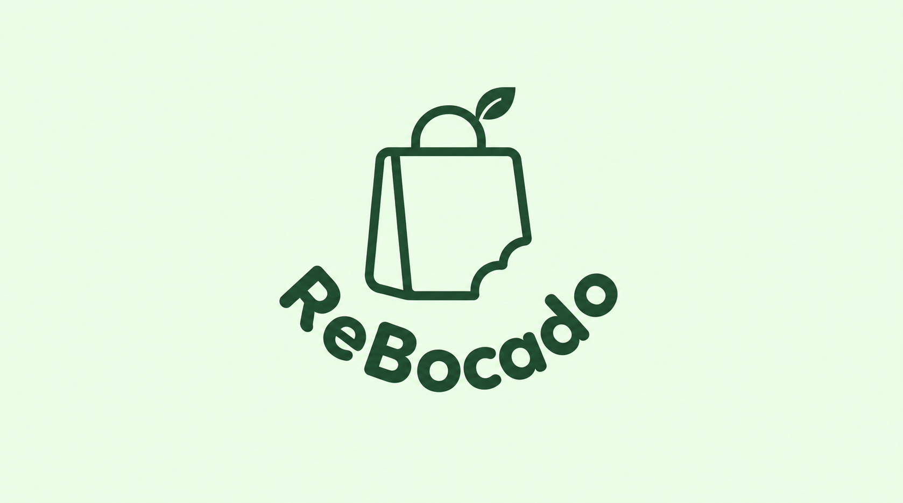
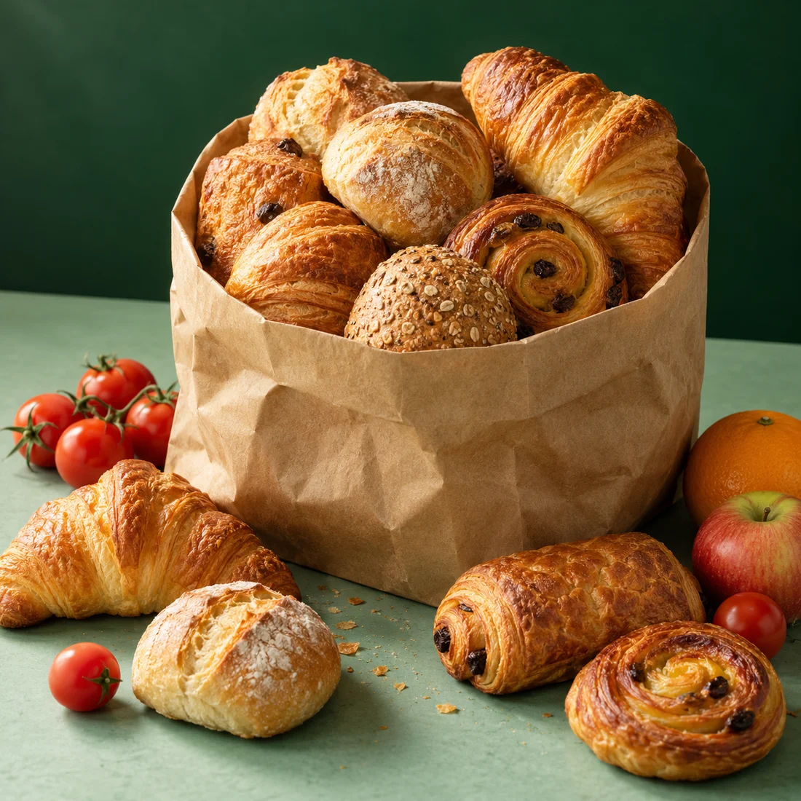

DESCUBRE
Encuentra tu pack
En el piloto compartimos por WhatsApp los packs de negocios de la zona. Elige según el tipo de comida, el precio y el horario de recojo.

Ese pan de hoy. Esa última porción. Todavía tienen mucho para dar. Rescata un pack sorpresa de un negocio cercano y disfruta por menos.
Empezamos con un piloto en Cochabamba

BUENO HASTA EL ÚLTIMO BOCADOLe damos una segunda oportunidad a la comida que no se vendió. Tú solo tienes que darle la primera mordida.
En el piloto compartimos por WhatsApp los packs de negocios de la zona. Elige según el tipo de comida, el precio y el horario de recojo.
Reserva el pack que te guste. Su contenido depende de lo que quedó disponible ese día; su precio y la hora de recojo se conocen antes.
Pasa por el local dentro del horario acordado y paga allí durante el piloto. Te llevas buena comida y el negocio recupera parte de su inversión.
Recojo en el negocio, sin delivery. La disponibilidad cambia cada día: rescatamos lo que sobra, sin producir de más.
Al cerrar el día, un negocio puede tener comida deliciosa que no alcanzó a vender. Con ReBocado, ese excedente encuentra a alguien que lo disfruta.
Son alimentos aptos para consumo, ofrecidos a un precio menor. Cada pack evita desperdicio y convierte una posible pérdida en una venta.
Buena comida de tu zona, a aproximadamente la mitad de su precio habitual.
Parte de lo invertido en ingredientes, tiempo y trabajo vuelve al negocio.
Termina en una mesa, y menos alimentos en buen estado terminan en la basura.
Cada día es distinto. Estos son ejemplos de lo que se puede rescatar, según el excedente de cada negocio.
Panes, croissants o piezas de bollería que quedaron al final del día. La selección la arma el negocio con lo que tiene disponible.
¿Tienes una panadería, cafetería, pensión o restaurante? Dale una salida a la comida en buen estado que no vendiste y recupera parte de su costo.
Estamos construyendo nuestra primera red de negocios.Arma packs con lo que ya preparaste y no se vendió. Tu trabajo todavía puede generar ingresos.
Contenido sorpresa, disponibilidad variable y recojo al cierre: un complemento a tus ventas habituales.
Participa en el piloto por WhatsApp. Sin gestionar envíos ni trasladar tu comida a otro lugar.
La sorpresa va en el pack.
Las condiciones, siempre claras.
Sí. ReBocado conecta a las personas con alimentos aptos para consumo que los negocios no lograron vender. El precio reducido responde al excedente y a su ventana de venta, no a que se trate de desechos.
Porque se arma con el excedente real del día. El negocio indica el tipo de pack, el precio y el horario de recojo, pero las piezas exactas pueden variar.
Consulta directamente al negocio antes de reservar. El contenido cambia y no podemos garantizar que todos los packs se adapten a una alergia o dieta específica. Si no puedes confirmar ingredientes y posibles alérgenos, no reserves ese pack.
Durante el piloto, reservas por WhatsApp y pagas en el local. Recoges tu pack en ese mismo negocio, dentro de la ventana horaria acordada. No ofrecemos delivery.
Estamos validando el servicio con un piloto por WhatsApp en Cochabamba, empezando por el entorno de la UMSS. La aplicación está en desarrollo. Anunciaremos su disponibilidad cuando esté lista.
Empezamos en Cochabamba. Empezamos cerca.
Y queremos que seas parte.